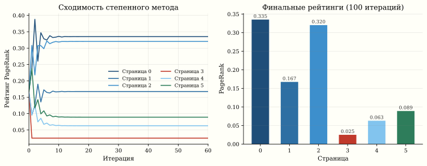
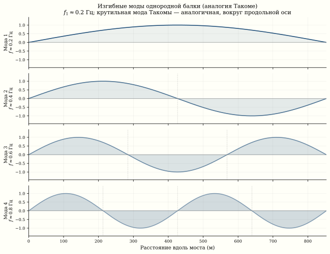

Собственные значения: от PageRank до шатающихся мостов
Такомский мост разрушился не от силы ветра — от его частоты: 67 км/ч совпали с одним секретным числом матрицы жёсткости. В тот же год Google обнаружил, что порядок среди миллиардов страниц — это тоже одно число, первое собственное значение матрицы ссылок. В обоих случаях системой управляют не все элементы матрицы, а несколько её характеристических чисел — собственных значений.
Собственные значения: что это
Для квадратной матрицы A \in \mathbb{R}^{n \times n} собственное значение \lambda и собственный вектор v \neq 0 — это пара, удовлетворяющая:
A v = \lambda v.
Матрица A действует на v как масштабирование: направление сохраняется, меняется только длина (и, возможно, знак).
У матрицы n \times n — ровно n собственных значений (с учётом кратности, в \mathbb{C}). Они образуют спектр матрицы.
История 1: PageRank
Как Google нашёл порядок в Интернете
В 1998 году Ларри Пейдж и Сергей Брин1 задали вопрос: как ранжировать миллиарды веб-страниц?
1 Brin, Page. The Anatomy of a Large-Scale Hypertextual Web Search Engine, 1998.
Интернет — ориентированный граф. Каждая страница i ссылается на несколько страниц j. Построим матрицу переходов M:
M_{ij} = \begin{cases} 1 / \text{deg}_{\text{out}}(j), & \text{если } j \to i, \\ 0, & \text{иначе.} \end{cases}
Столбец j матрицы M — распределение вероятностей: если «случайный сёрфер» на странице j, он с равной вероятностью переходит по любой из её ссылок.
Стационарное распределение
Запустим случайного сёрфера и подождём долго. Его положение сойдётся к стационарному распределению \pi:
M \pi = \pi.
Это уравнение означает: \pi — собственный вектор M, соответствующий собственному значению \lambda = 1.
По теореме Перрона–Фробениуса для стохастических матриц \lambda = 1 — наибольшее собственное значение, и соответствующий собственный вектор \pi неотрицателен и единственен (при условии связности и апериодичности графа).

Чтобы гарантировать связность, Пейдж добавил «телепортацию»: с вероятностью \alpha = 0.85 сёрфер идёт по ссылке, с вероятностью 1 - \alpha — переходит на случайную страницу:
M' = \alpha M + (1 - \alpha) \frac{1}{n} \mathbf{1}\mathbf{1}^T.
Матрица M' гарантированно имеет единственный стационарный вектор.
import numpy as np
# Маленький веб: 6 страниц
# 0 → {1, 2}, 1 → {2}, 2 → {0}, 3 → {2, 5}, 4 → {5}, 5 → {0, 4}
edges = {0: [1, 2], 1: [2], 2: [0], 3: [2, 5], 4: [5], 5: [0, 4]}
n = 6
M = np.zeros((n, n))
for j, targets in edges.items():
for i in targets:
M[i, j] = 1.0 / len(targets)
# Демпфирование
alpha = 0.85
M_damped = alpha * M + (1 - alpha) / n * np.ones((n, n))
# Метод степенной итерации
pi = np.ones(n) / n
for _ in range(100):
pi = M_damped @ pi
pi /= pi.sum()
print("PageRank:")
for i in range(n):
print(f" Страница {i}: {pi[i]:.4f}")
# Проверка: собственные значения
eigvals, eigvecs = np.linalg.eig(M_damped)
print(f"\nМакс. собственное значение: {eigvals[0].real:.6f}")
# Должно быть ≈ 1.0Степенной метод
Google не вычисляет все собственные значения — на графе из миллиардов узлов это невозможно. Вместо этого используется степенной метод:
\pi^{(k+1)} = M' \pi^{(k)}.
Он сходится к главному собственному вектору со скоростью |\lambda_2 / \lambda_1|^k, где \lambda_2 — второе по величине собственное значение. При \alpha = 0.85 гарантировано |\lambda_2| \leq 0.85, и для сходимости до 4 знаков достаточно \approx 50–60 итераций: \log(10^{-4}) / \log(0.85) \approx 57.
История 2: вибрации и шатающиеся мосты
Собственные частоты
Натянутая струна, мембрана барабана, мост через реку — все вибрирующие системы описываются дифференциальным уравнением:
M \ddot{u} + K u = 0,
где M — матрица масс, K — матрица жёсткости, u(t) — вектор смещений. Подстановка u(t) = v \sin(\omega t) даёт обобщённую задачу на собственные значения:
K v = \omega^2 M v.
Собственные значения \omega_i^2 определяют собственные частоты конструкции, а собственные векторы v_i — формы колебаний (моды).
Такомский мост (1940)
7 ноября 1940 года мост Такома-Нэрроуз в штате Вашингтон разрушился через четыре месяца после открытия. Ветер со скоростью 67 км/ч вызвал крутильные колебания с нарастающей амплитудой.
Причина: по популярному объяснению, частота вихревого обрыва ветра (vortex shedding) совпала с одной из собственных частот моста — наступил резонанс. Современный анализ (Billah & Scanlan, 1991) уточняет: к моменту разрушения частоты уже не совпадали; механизм был аэроупругой флаттерной неустойчивостью. Математика та же — собственные частоты матрицы жёсткости, — но физика тоньше. Амплитуда колебаний росла до тех пор, пока конструкция не разрушилась.
Если внешняя сила колеблется с частотой, близкой к собственной частоте \omega_i системы, амплитуда колебаний растёт. В отсутствие демпфирования — до бесконечности. С демпфированием — до 1/(2\zeta), где \zeta — коэффициент демпфирования. Мост Такома имел \zeta \approx 0.002 для крутильной моды.


Численная модель: мост как система масс на пружинах
Представьте мост цепочкой масс на пружинах и плавно меняйте частоту ветра — амплитуда взлетает к небесам ровно тогда, когда частота силы совпадает с собственной частотой моста. Покрутите ползунки и поймайте резонанс сами.
import numpy as np
import matplotlib.pyplot as plt
def bridge_eigenfrequencies(n_segments=20, L=853, EI=1e10,
m_per_m=5700):
"""
Модель моста как балки Эйлера–Бернулли,
дискретизованная конечными разностями.
n_segments: число сегментов
L: длина моста (м), Такома = 853 м
EI: изгибная жёсткость (Н·м²)
m_per_m: масса на погонный метр (кг/м)
"""
n = n_segments
h = L / n
m = m_per_m * h # масса одного сегмента
# Матрица жёсткости для балки (4-я разность)
K = np.zeros((n-1, n-1))
for i in range(n-1):
K[i, i] = 6
if i > 0:
K[i, i-1] = -4
K[i-1, i] = -4
if i > 1:
K[i, i-2] = 1
K[i-2, i] = 1
K *= EI / h**4
M_mat = m * np.eye(n-1)
# Обобщённая задача: K v = ω² M v
eigvals = np.linalg.eigvalsh(np.linalg.solve(M_mat, K))
freqs_hz = np.sqrt(np.abs(eigvals)) / (2 * np.pi)
freqs_hz.sort()
return freqs_hz
freqs = bridge_eigenfrequencies()
print("Первые 5 собственных частот моста (Гц):")
for i, f in enumerate(freqs[:5]):
print(f" Мода {i+1}: {f:.4f} Гц (период {1/f:.2f} с)")
# Реальный Такома: крутильная мода ≈ 0.2 ГцФормы колебаний
import numpy as np
import matplotlib.pyplot as plt
n = 30
L = 853
h = L / n
x = np.linspace(0, L, n+1)
# Упрощённая модель: однородная струна (аналогия)
# Формы колебаний — синусы
fig, axes = plt.subplots(4, 1, figsize=(10, 8))
for k in range(4):
mode = np.sin((k+1) * np.pi * x / L)
axes[k].plot(x, mode, 'b-', lw=2)
axes[k].fill_between(x, mode, alpha=0.15)
axes[k].axhline(0, color='k', lw=0.5)
axes[k].set_ylabel(f"Мода {k+1}")
axes[k].set_xlim(0, L)
axes[k].set_ylim(-1.5, 1.5)
axes[3].set_xlabel("Расстояние вдоль моста (м)")
axes[0].set_title("Формы колебаний (моды) моста")
plt.tight_layout()Единая математика
| Задача | Матрица | Что значит \lambda | Что значит v |
|---|---|---|---|
| PageRank | Матрица переходов M | \lambda_1 = 1 (стационарность) | Вектор рейтингов страниц |
| Мост | M^{-1}K (жёсткость/масса) | \omega^2 (собственная частота) | Форма колебания (мода) |
| Кластеризация | Лапласиан графа L | Малые \lambda → кластеры | Координаты кластеров |
| PCA | Ковариационная матрица \Sigma | Дисперсия компоненты | Главное направление |
| Квантовая механика | Гамильтониан H | Энергия состояния | Волновая функция |
Во всех случаях структура одна: матрица кодирует систему, собственные значения — её характеристические параметры, собственные векторы — характеристические «формы».
Единый закон: собственное значение — это резонансная частота системы в широком смысле. PageRank ищет ту частоту, на которой граф «колеблется стационарно» (\lambda_1 = 1). Мост гибнет, когда ветер попадает в резонанс с одной из собственных частот матрицы жёсткости. Везде: система хранит в своих собственных значениях список «опасных» или «выделенных» частот — и природа, и алгоритм выбирают именно их.
Второе собственное значение: скорость сходимости
В каждом контексте ниже \lambda_2 — свой объект, аналогия лишь структурная. Не переносить выводы между контекстами.
В PageRank \lambda_1 = 1 даёт стационарное распределение. А \lambda_2 определяет скорость сходимости к нему: чем меньше |\lambda_2|, тем быстрее степенной метод сходится.
В колебательной задаче второе собственное значение \lambda_2 = \omega_2^2 — это первый обертон: вторая мода струны, что звучит на октаву выше основного тона (\lambda_1 = \omega_1^2). Сам основной тон задаёт именно \lambda_1 — наименьшее собственное значение, ту моду, которую малая сила раскачивает легче всего.
В спектральной кластеризации \lambda_2 графового лапласиана — алгебраическая связность (Fiedler value): она показывает, насколько «тяжело» разрезать граф на две части. Малый \lambda_2 — граф легко распадается.
Численный эксперимент: резонанс
import numpy as np
import matplotlib.pyplot as plt
# Гармонический осциллятор с внешней силой
# m ẍ + c ẋ + k x = F₀ cos(ω_ext t)
m, c, k = 1.0, 0.02, 1.0 # слабое демпфирование
omega_0 = np.sqrt(k / m) # собственная частота
print(f"Собственная частота: ω₀ = {omega_0:.3f}")
omega_ext_values = np.linspace(0.1, 2.0, 500)
F0 = 1.0
# Амплитуда установившихся колебаний
amplitudes = F0 / np.sqrt((k - m * omega_ext_values**2)**2
+ (c * omega_ext_values)**2)
plt.figure(figsize=(10, 5))
plt.plot(omega_ext_values, amplitudes, 'b-', lw=2)
plt.axvline(omega_0, color='r', ls='--', label=f"ω₀ = {omega_0:.2f}")
plt.xlabel("Частота внешней силы ω")
plt.ylabel("Амплитуда")
plt.title("Резонансная кривая: пик при ω ≈ ω₀")
plt.legend()
plt.yscale('log')
plt.grid(True, alpha=0.3)Современные мосты
После Такомы инженеры обязательно вычисляют собственные частоты конструкции и проверяют их удалённость от частот ветровой нагрузки. Метод конечных элементов (FEM) дискретизирует мост в матрицу K и M размером в миллионы, а алгоритмы Ланцоша и Арнольди эффективно находят несколько наименьших собственных значений.
Лондонский Millennium Bridge (2000) — другой пример: при открытии тысячи пешеходов синхронизировали шаг, возбудив боковую моду с f \approx 0.5 Гц. Мост закрыли на 2 года для установки демпферов.
Связи
- PageRank: подробное изложение теоремы Перрона–Фробениуса и алгоритма ранжирования
- Цепи Маркова: стационарное распределение как собственный вектор с \lambda = 1
- Спектральная кластеризация: графовый лапласиан и Fiedler value
- PCA: собственные значения ковариационной матрицы как дисперсии главных компонент